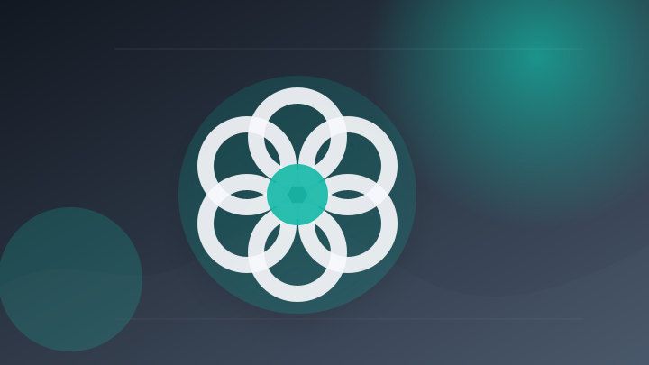
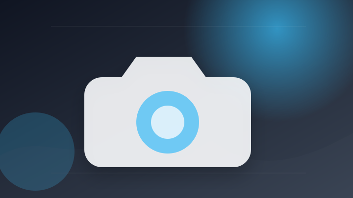
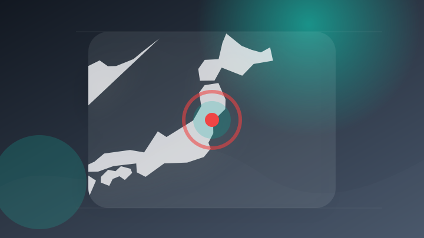
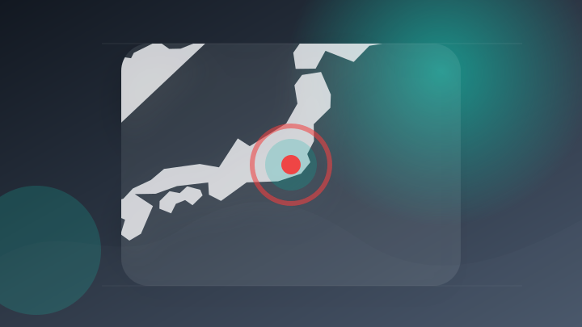
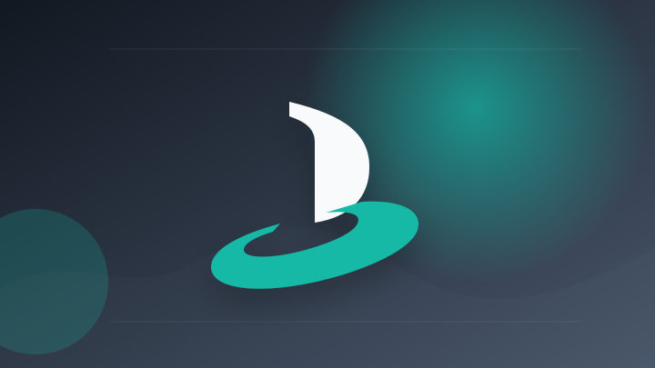

AI
6 topics
【AIの未来は「自由」か「規制」か】「オープンモデルを禁止するな」NVIDIAの要請にOpenAIもGoogleも賛同／Kimi K3で加速する“アンソロピック包囲網”／今井翔太【AI QUEST】
【AIの未来は「自由」か「規制」か】「オープンモデルを禁止するな」NVIDIAの要請にOpenAIもGoogleも…
注目ポイント注目度 70点
2026年版DHL Eコマーストレンドレポート発表：AI時代に「旧来のルール」は通用しない
注目ポイント注目度 64点

ChatGPTに従ったら、本当だった
注目ポイント注目度 61点
生成AI活用事例データベース、2026年6月時点までの事例を追加・更新
注目ポイント注目度 61点
【生成AI項目など追加】コンピュータ出版販売研究機構（CPU）、2026年7月版「コンピュータ書籍棚分類コードガイド」を発行
【生成AI項目など追加】コンピュータ出版販売研究機構（CPU）、2026年7月版「コンピュータ書籍棚分類コードガイ…
注目ポイント注目度 61点
セルプロモート、中小企業向け生成AI業務システム開発サービス「AI Start Partner」を開始
注目ポイント注目度 61点
IT業界
6 topics
Google Cloud Next Tokyoが開幕、三上代表「AIエージェントは本番運用へ」
注目ポイント独立2媒体｜注目度 69点
「AIホワイトハッカー ペネトレーションテスト」提供開始～AIと人を組み合わせ、ゼロデイ脆弱性の発見から対策まで支援～ | 脆弱性診断（セキュリティ診断）のGMOサイバーセキュリティ byイエラエ
「AIホワイトハッカー ペネトレーションテスト」提供開始～AIと人を組み合わせ、ゼロデイ脆弱性の発見から対策まで支…
注目ポイント注目度 67点
ソフトバンク、「Microsoft Top Partner Engineer Award 2026」を受賞（BCN）
ソフトバンク、「Microsoft Top Partner Engineer Award 2026」を受賞（BCN…
注目ポイント独立2媒体｜注目度 66点
Google Cloud Next Tokyo 26で、企業向けAI戦略の最新機能、主要アップデートを発表 近日提供予定の「Gemini 3.5 Pro」ほか
Google Cloud Next Tokyo 26で、企業向けAI戦略の最新機能、主要アップデートを発表 近日提…
注目ポイント注目度 64点
Microsoft 365を毎年払いたくない人へ、Office Home 2024が11％オフ
注目ポイント注目度 61点
隠されたプロンプトがMicrosoft CopilotをAIワームに変える
注目ポイント注目度 61点
社会
1 topics
事件・事故
6 topics
カンボジア拠点の特殊詐欺、かけ子の男に懲役10年求刑 昨夏逮捕された29人のうち、初の求刑
注目ポイント注目度 70点

人気の海の公園でトイレ放火か…男逮捕 防犯カメラの捜査で関与が浮上（2026年7月30日掲載）｜日テレNEWS NNN
人気の海の公園でトイレ放火か…男逮捕 防犯カメラの捜査で関与が浮上（2026年7月30日掲載）
注目ポイント注目度 70点
瀬戸 特殊詐欺の「受け子」か 防犯カメラ捜査で１時間後逮捕
注目ポイント注目度 70点
コンビニ店内で未会計のカップ酒をグビグビ⋯「お金を使うのがもったいなかった」79歳の男を窃盗容疑で逮捕 余罪も含め捜査【高知】 | 高知のニュース・天気｜KUTV NEWS | KUTVテレビ高知
コンビニ店内で未会計のカップ酒をグビグビ⋯「お金を使うのがもったいなかった」79歳の男を窃盗容疑で逮捕 余罪も含め…
注目ポイント注目度 70点

【偽の逮捕状など画像あり】警察官など名乗る男らが「偽の警察手帳」などを使い80代男性から現金2800万円をだまし取る特殊詐欺事件 仙台・若林区
【偽の逮捕状など画像あり】警察官など名乗る男らが「偽の警察手帳」などを使い80代男性から現金2800万円をだまし取…
注目ポイント注目度 70点

東京 江東区 強盗未遂事件 新たに1人逮捕 “案件屋”か 警視庁
注目ポイント注目度 70点
芸能人の結婚・離婚・交際
2 topics
ゲーム
2 topics
“爆速成長” アクションRPG『ステューピッド・ネバー・ダイズ（Stupid Never Dies）』 10月22日（木）発売決定 ゲームの発売に先駆けて、主題歌配信も決定！
“爆速成長” アクションRPG『ステューピッド・ネバー・ダイズ（Stupid Never Dies）』 10月22…
注目ポイント注目度 61点

Steamで好評のパン屋経営×ダンジョン探索アクションRPG『Aeruta(アルタ)』がPS5/PS4/Switchで発売決定！〜豪華賞品＆設定資料集掲載権が当たる「イラストコンテスト」を開催！〜
Steamで好評のパン屋経営×ダンジョン探索アクションRPG『Aeruta(アルタ)』がPS5/PS4/Switc…
注目ポイント注目度 61点